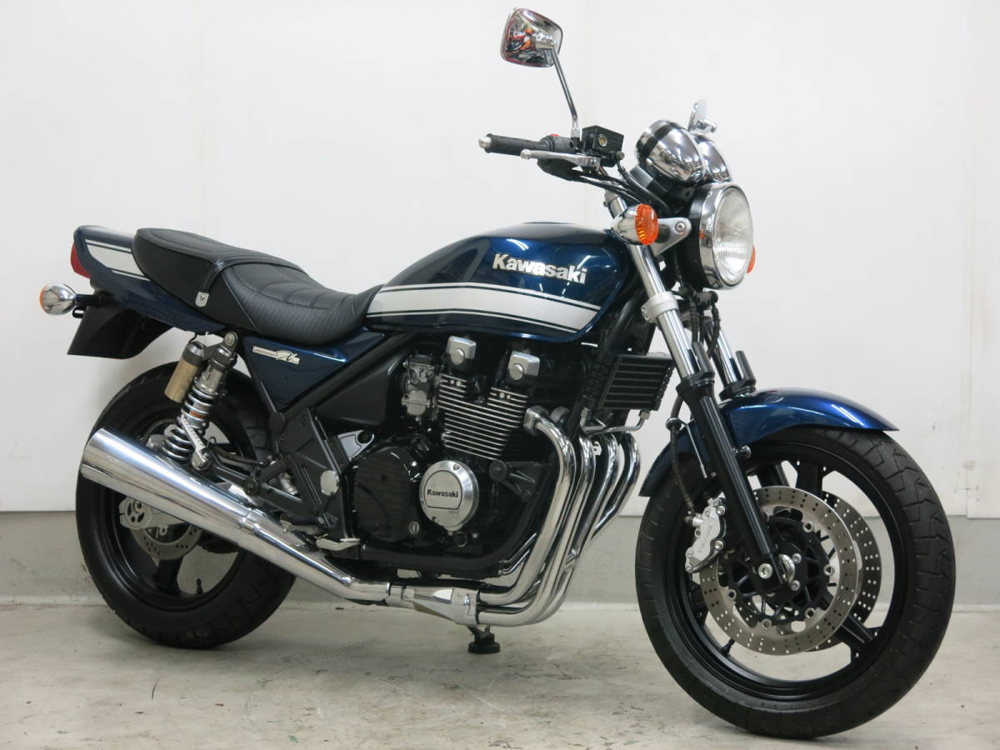
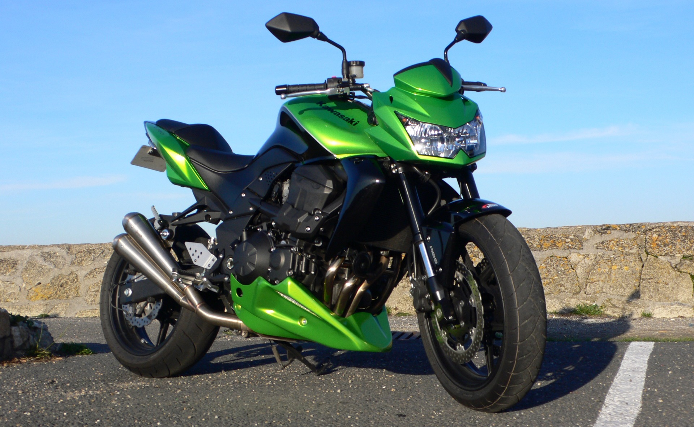
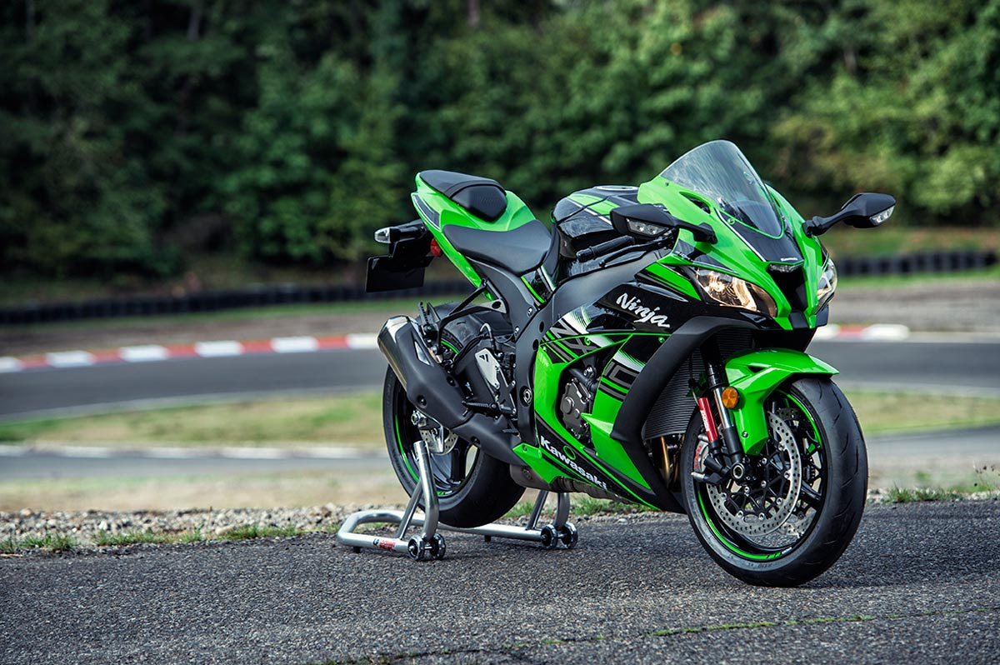
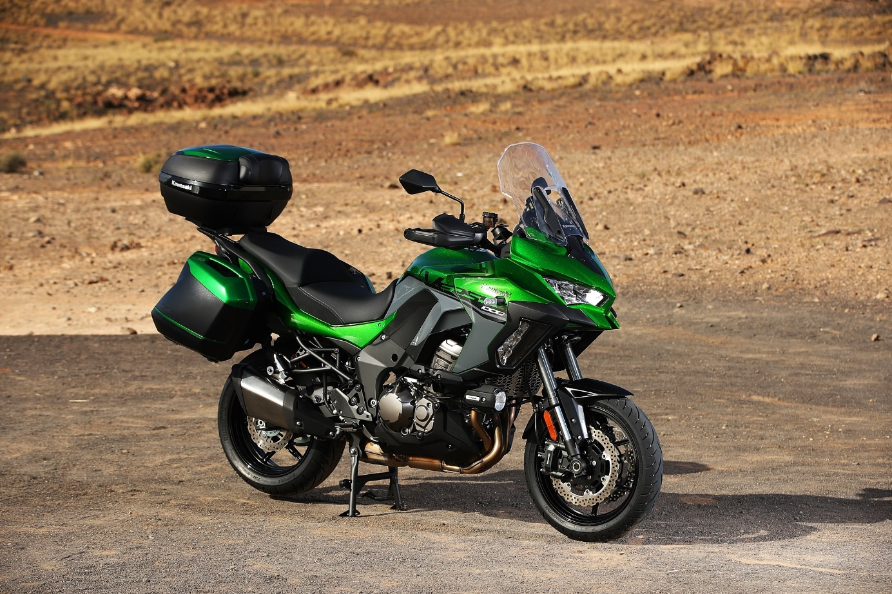
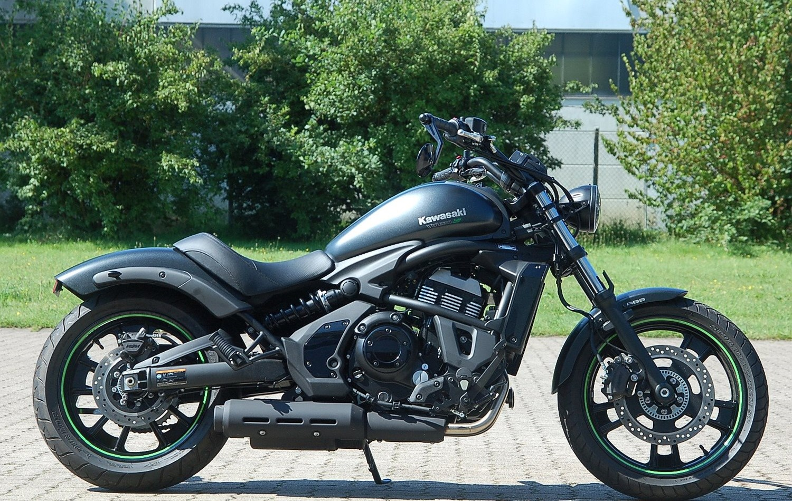
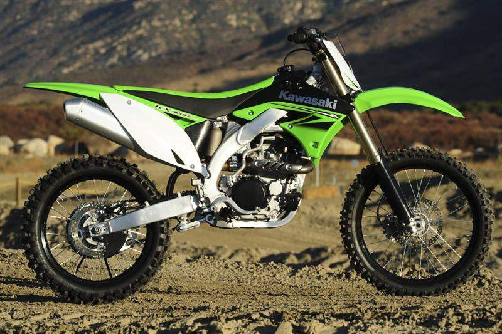

Kawasaki Heavy Industries, Ltd. — одна из крупнейших промышленных компаний в мире со штаб-квартирами в Кобе и Токио, Япония. На момент создания ее основной деятельностью было судостроение. Сейчас концерн занимается изготовлением самолётов, вертолётов, промышленных роботов, гидроциклов, тракторов, поездов, двигателей, оружия, мотоциклов и мотовездеходов.Несмотря на то, что производство мотоциклов не является главным направлением компании, выпущенные ею модели во многом устанавливали высокие стандарты для всех других производителей. Сейчас Kawasaki Heavy Industries входит в четверку крупнейших изготовителей мотоциклов в Японии и поставляет свою продукцию по всему миру. История компании началась в 1878 году, когда Сёдзо Кавасаки основал небольшой судостроительный завод. До этого он работал на верфи, изучал тонкости торговых судов, занимался транспортировкой сахара, исследовал различные морские маршруты. С началом Японско-китайской войны компания получает множество заказов на ремонт судов, что самым благотворным образом сказывается на ее финансовом состоянии. После окончания войны, в середине 1950-х годов на рынке небольших транспортных средств Японии находилось порядка 150 игроков. Население нуждалось в дешевых и надежных средствах передвижения, а общественный транспорт не справлялся с огромным наплывом пассажиров. Первыми разработками Kawasaki были двух и четырехтактные двигатели, которые устанавливались на велосипеды Noris. Со временем компания понимает, что выпуск запчастей и двигателей не имеет хороших перспектив. Поэтому начинается выпуск двухколесных транспортных средств.Современные мотоциклы Kawasaki мало чем напоминают, своих предшественников прошлых лет. Во всех присутствуют новейшие разработки компании. Любители промчаться с ветерком однозначно не будут разочарованы. Мотоциклы Kawasaki по праву считаются флагманом среди производителей спортивных аппаратов, и с честью держат эту высокую марку. Последние разработки компании, отличное тому доказательство. Если вы впервые увидели мотоцикл Кавасаки и решили его приобрести, то не будете разочарованы. Они великолепно ведут себя на трассах, создавая ощущение полета, и доставляя своему владельцу истинное удовольствие от езды.
Модельный ряд мотоциклов достаточно большой, в данной статье представлены самые популярные модели в своих категориях:
Модель классического мотоцикла Kawasaki ZR400 появилась в 1989 году на внутреннем японском рынке и
представляла собой младшую версию в классической линейке ZR. Яркий представитель старой школы
городского байка. Мотоциклы Kawasaki заняли нишу настоящих 400-кубовых «классиков», немного старомодных,
но, безусловно, стильных. Мотоцикл Kawasaki ZR 400 радует своей управляемостью. Он позволяет проходить повороты на хорошей скорости,
при этом мотоцикл не виляет хвостом как радостная собака. Комфортной скоростью для мотоцикла считается 140-160 км/час.

Kawasaki Z750 — довольно типичный современный мотоцикл. Выполненный в агрессивном стиле нейкид-байк был
построен с использованием мотора от флагмана линейки, Z1000, который был доработан с уменьшением объёма
и дефорсирован. Выступая на одном поле с такими конкурентами, как Honda CB 600F Hornet, Yamaha FZ6 и
Suzuki GSR 750, этот мотоцикл достойно показал себя, и выпускался с 2004 по 2013 год, когда ему на замену
пришла обновлённая 800-кубовая модель. Компания приняла решение выпустить новый Kawasaki Z800 в качестве
конкурента другому новичку — Yamaha FZ8. Все мотоциклы Z-серии пользуются славой довольно «злых» аппаратов,
и Kawasaki Z750 не стал исключением. Слава злобного и задиристого городского хулигана заслужена им по праву
— этот мотоцикл отлично приспособлен для агрессивной езды, а весь его внешний вид говорит о том, что он не
терпит соперничества.

Модель спортивного мотоцикла Kawasaki ZX-10R была впервые представлена в 2004 году в качестве последователя
Kawasaki ZX-9R. Появление модели было обусловлено острой конкуренцией и стремительным развитием класса литровых
спортивных мотоциклов, построенных по образу и подобию гоночных прототипов. Спортивный и стильный, этот мотоцикл
способен впечатлять. Kawasaki ZX-10R – машина, которая считается одной из самых интересных среди нынешних
представителей этого класса.Динамика и дизайн, комфорт и информативность – все это присутствует в модели.

Многие считают Kawasaki Versys лучшим воплощением концепции "паркетника" - популярным, достаточно универсальным,
не слишком люксовым, но и не совсем уж бюджетным. Словом, этаким крепким середнячком во всём, каким и должен быть
настоящий кроссовер. Нынешнее поколение Versys 1000 оснащено передовыми технологиями, которых, если честно, от
Kawasaki особо и не ожидали: премиальные варианты S и SE оснащены такими функциями, как наклонные ABS и
трекшн-контроль.

Модель круизера Kawasaki Vulcan S впервые была представлена в 2014 году как модель 2015 года. Мотоцикл является
современным последователем Kawasaki EN500 Vulcan. Модель также имеет название - Kawasaki EN650 Vulcan. В целом же,
концепция Kawasaki Vulcan S - предложить рынку мотоцикл брутального внешнего вида, напоминающего дизайн
пауэр-крузеров, но по оснащению и характеру сопоставимым с привычными современными дорожными мотоциклами
(легкий вес, удобная посадка, среднеобъемный мотор, хорошие динамические характеристики, экономичность).

Флагманская модель Kawasaki KX450 оснащена 449-кубовым четырёхтактным мотором жидкостного охлаждения, настроенным
для наиболее опытных в гонках райдеров, узкой алюминиевой пространственной рамой, электростартером, подвесками
Showa с технологией A-KIT, а также сцеплением с тарельчатой шайбой и гидравлическим приводом.

| МОДЕЛЬ | МОЩНОСТЬ | РАЗГОН ДО 100 КМ/Ч | СТОИМОСТЬ |
|---|---|---|---|
| Kawasaki ZR400 | 53 л.с. | 5.0 с. | от 328 000 р. |
| Kawasaki Z750 | 105 л.с. | 3.2 с. | от 520 000 р. |
| Kawasaki ZX-10R | 203 л.с. | 2.8 с. | от 920 000 р. |
| Kawasaki Versus 1000 | 118 л.с. | 3.5 с. | от 410 000 р. |
| Kawasaki Vulcan S | 46 л.с. | 6.7 с. | от 960 000 р. |
| Kawasaki KX450 | 53 л.с. | 5.0 с. | от 450 000 р. |